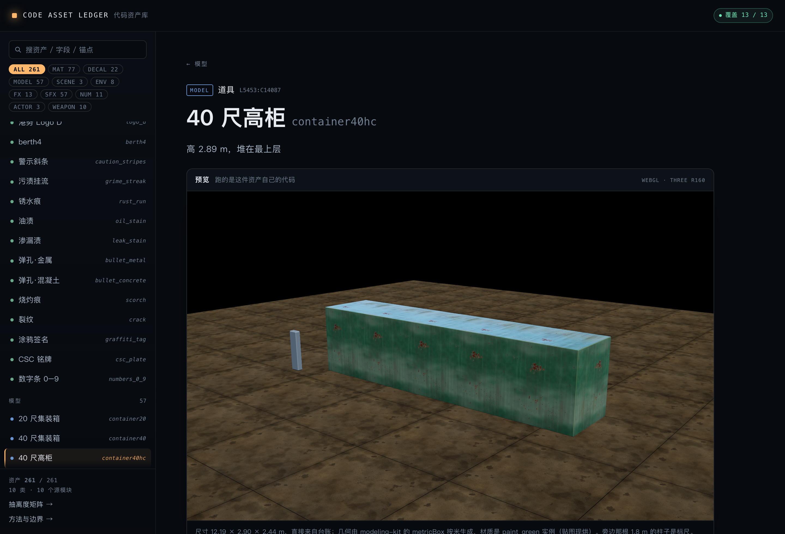
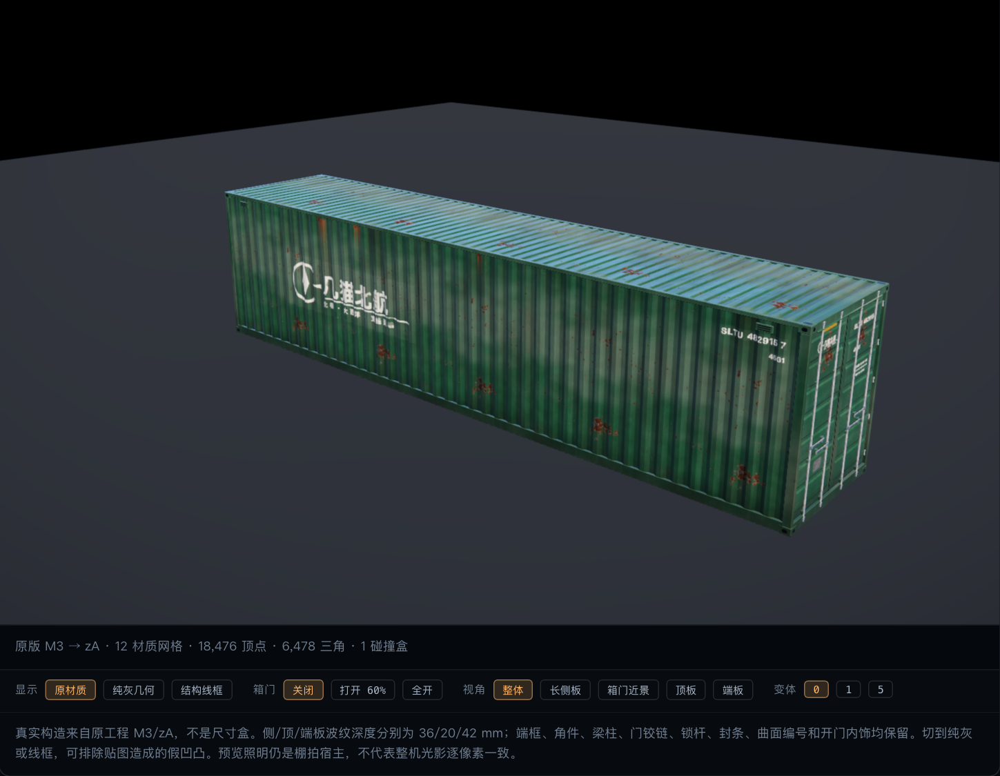
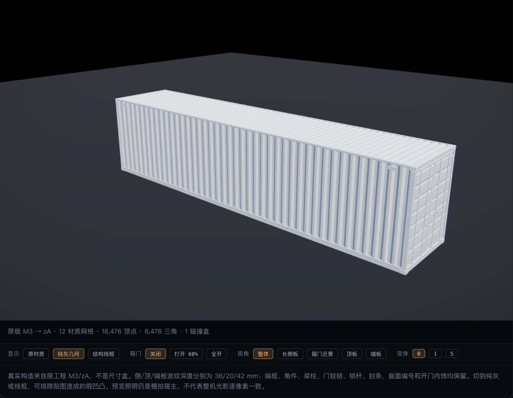
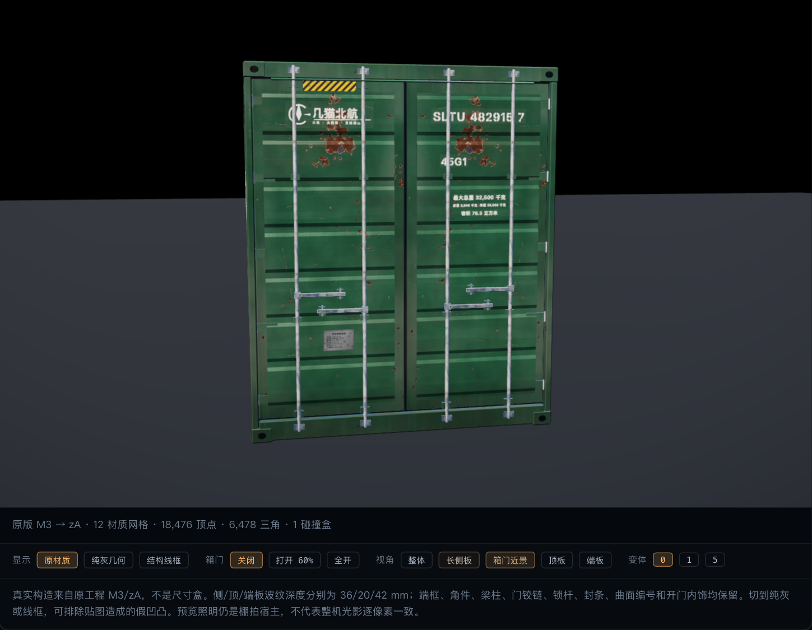
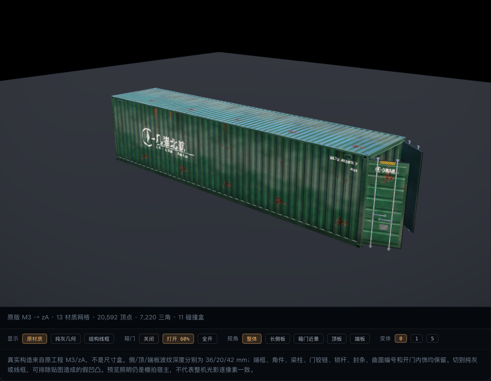
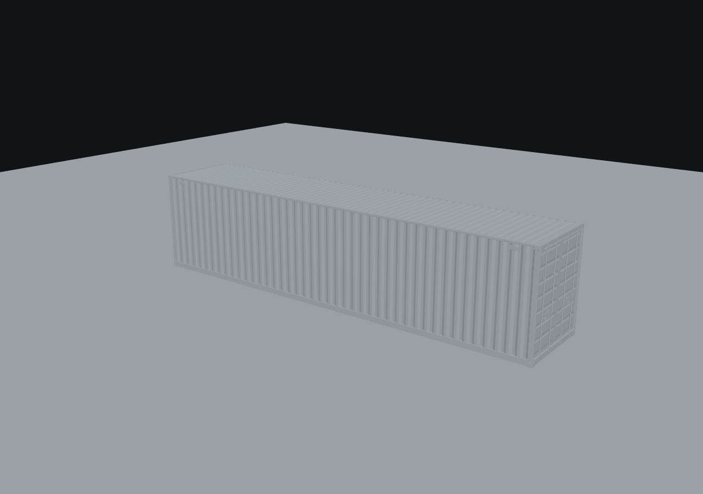

CODE ASSET LEDGER / STRUCTURE CORRECTION
集装箱不再是一个平板盒
修复对象：20 尺、40 尺、40 尺高柜。原版真实构造链 M3 → zA，保留几何、米制 UV、顶点色、曲面贴花与开门碰撞。
024 组参数测试的最大顶点位置误差
36 / 20 / 42 mm侧板 / 顶板 / 端板的原版波纹深度
18,476 顶点40 尺高柜默认闭门款；原先只是 24 顶点尺寸盒
先看修复前后


关闭贴图，结构仍然存在

门五金与内部结构


真正用原版验，而不是自己验自己
左图直接运行未启动游戏的原始完整 IIFE，右图运行抽取后的资产模块。相同参数、相机、灰材质和照明；同时逐网格比较 position / normal / UV / color / index、包围盒和碰撞。24 组全部一致。


此次修复边界
登记齐全不等于还原齐全。
此前漏算了循环注册，原版 36 种道具均有专用建模器。此轮补齐登记至 283 个管理条目，但只有三种集装箱接入真实道具构造；其余 33 种道具明确显示“尺寸占位，非原版模型”。声音、角色与场景等仍有仅参数展示的部分。原版本身的角孔/叉槽含深色贴片近似，未擅自改成 CSG 穿孔。
此前漏算了循环注册，原版 36 种道具均有专用建模器。此轮补齐登记至 283 个管理条目，但只有三种集装箱接入真实道具构造；其余 33 种道具明确显示“尺寸占位，非原版模型”。声音、角色与场景等仍有仅参数展示的部分。原版本身的角孔/叉槽含深色贴片近似，未擅自改成 CSG 穿孔。